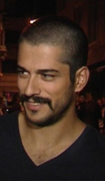

He went from a modelling contest his father entered without telling him to the two roles that carried Turkish television around the world: Kemal Soydere in Kara Sevda — the first Turkish series ever to win an International Emmy — and Osman Gazi in Kuruluş: Osman, which he led for a record six seasons and 194 episodes. In 2026 he is back in a new lead role, as Kenan Kozan in Güneşin Doğduğu Yer.

| Full name | Burak Özçivit |
| Born | 24 December 1984, Istanbul, Turkey |
| Age | 41 years old (in November 2026; turns 42 on 24 December 2026) |
| Height | 1.84 m (6 ft 1 in) |
| Nationality | Turkish |
| Profession | Actor, former model |
| Years active | 2003–2007 (modelling); 2006 – present (acting) |
| Best known for | Kara Sevda (2015–2017), Kuruluş: Osman (2019–2025), Çalıkuşu (2013–2014) |
| Net worth | Estimated at $5 million – $10 million (see the net worth section below — no audited figure exists) |
| Spouse | Fahriye Evcen (married 29 June 2017) |
Burak Özçivit is a Turkish actor and former model whose face became familiar far beyond Turkey through two very different kinds of television: a modern romance that won an International Emmy, and a historical epic about the founder of the Ottoman Empire. He is one of the actors who carried the Turkish dizi boom abroad — Kara Sevda alone was sold to more than 100 countries — and then stayed at the top of Turkish television for six straight years as Osman Gazi.
What makes his story different from a straight acting biography is where it started. He did not plan to model or act: his father sent his photographs to a modelling competition without telling him. That surprise entry led to a modelling career, which led to television, which led to the two defining roles of his career — and, on the set of Çalıkuşu, to the wife he would marry.
Burak Özçivit was born on 24 December 1984 in Istanbul, Turkey, to a family originally from Gaziantep, which makes him 41 years old in November 2026 — he turns 42 on Christmas Eve, 24 December 2026. He was educated at Kazım İşmen High School in Istanbul, and then graduated from Marmara University, Faculty of Fine Arts, Department of Photography.
The photography degree is a detail worth keeping, because it explains the visual sense that runs through his career. He trained to look at a frame before he ever stood in one — first as a model, then as an actor, and later as a producer running his own company.
While he was still at university, his father sent his photographs to the Best Model of Turkey competition without his knowledge. In 2003 he entered the competition and was named its most promising model. He began working with modelling agencies, and in 2005 he returned to the competition, was selected Best Model of Turkey, and then finished second at Best Model of the World the same year.
Two cautions belong here, because the sources disagree on the 2003 result: some pages describe him as winning Top Model of Turkey in 2003, while the fuller accounts say he was named most promising that year and won the title in 2005. This article follows the fuller account — most promising in 2003, Best Model of Turkey and second best in the world in 2005 — because it is the version supported by the detailed biographies, and it does not claim both years as wins.
Modelling gave him a public profile and a way into television, and it shaped the screen presence he still has: tall, still, and comfortable in front of a camera. He modelled from 2003 to about 2007, overlapping with his first acting roles.
His acting debut came in 2006, in Eksi 18 (Minus 18), as Murat. Smaller roles followed — Zoraki Koca, Baba Ocağı, İhanet and Küçük Sırlar, the Turkish version of Gossip Girl, in which he played Çetin — while he learned the craft on set.
The breakthrough was historical. From 2011 to 2013 he played Malkoçoğlu Balı Bey in Muhteşem Yüzyıl (Magnificent Century), the big-budget Ottoman court drama that was already a hit across the Middle East, the Balkans and Latin America. As the loyal commander Balı Bey he showed he could carry a period role — a skill that would define the second half of his career — and he won GQ Turkey's Men of the Year Actor of the Year award in 2012 for the part.

In 2013 he took the lead in Çalıkuşu (The Wren), playing Kamran opposite Fahriye Evcen. The series, based on Reşat Nuri Güntekin's classic novel, ran for 2013–2014, and it matters for two reasons: it proved he could lead a romantic drama, and it is where he met Evcen — the actress he would marry in 2017.
There is a small link to another Stars of Europe article here: Hande Erçel also appeared in Çalıkuşu in 2013, as Zahide, early in her own career.
From 2015 to 2017 he starred as Kemal Soydere in Kara Sevda (Endless Love), opposite Neslihan Atagül and Kaan Urgancıoğlu. Kemal — an engineer from a working-class family who falls in love with Nihan, a woman from a wealthy family — became the role that made him a global star. The series was sold to more than 100 countries, and in 2017 it won the International Emmy for Best Telenovela — the first, and so far only, Turkish series to win that award.
The role brought him his own recognition too: he won Best Drama Actor at the Bilkent Television Awards in 2015 for Kara Sevda, and a special prize at the Seoul International Drama Awards. The series ran for 74 episodes over two seasons, and it remains the work most international viewers know him for.
In 2019 he took on the biggest role of his career: Osman Gazi, founder of the Ottoman Empire, in Kuruluş: Osman, the sequel to Diriliş: Ertuğrul. He played Osman for a record six seasons and 194 episodes, from 2019 to 2025 — the longest run of any single role in his career, and one of the longest leading runs in Turkish television.
The role carried a weight he has spoken about himself: playing the founder of an empire is a responsibility, not just a part, and the series was watched across Turkey and the wider Turkish-speaking and Muslim world. Reports in July 2025 said he left the series after season 6, with the exit linked to a reported contract and pay dispute, and that he would not return for season 7. That is presented here as reported, not as a confirmed fact, because no stronger source has confirmed the reason.
His next chapter is already on screen. In 2026 he leads the new ATV drama Güneşin Doğduğu Yer (The Place Where the Sun Rises, also presented internationally as Land of the Sun), as Kenan Kozan — the heir to a powerful family in Adana, whose life changes when he falls in love with Leyla Breger, played by Beyza Gümülcine. The story moves between Germany and Adana in the 1990s.
The series, produced by TİMS&B Productions and written by Yıldız Tunç, premiered on ATV on 17 September 2026 — a week later than its original 10 September date — and opened as the highest-rated prime-time Turkish drama among AB and ABC1 audiences, with its fourth episode, on 8 October 2026, ranking first in Turkey in those categories. He promoted the series at MIPCOM in Cannes in October 2026, where ATV presented it to international buyers.
His film work runs alongside the television career: Musallat (2007, his film debut), Aşk Sana Benzer (Love Looks Like You, 2015), Kardeşim Benim (My Brother, 2016) and Can Feda (2018). Television has always been where his biggest audiences are, but the films show the same range — horror, romance, comedy-drama and action.
He also runs his own production company, BRK's Production, giving him a producer's stake in the industry he entered as a model more than twenty years ago.
His awards, in one place — using only the awards table on his Wikipedia biography, not fan-site counts, which disagree with each other. One fan site claims 21 wins from 29 nominations; that figure is not used here, because it cannot be verified against the named awards table.
He won GQ Turkey Men of the Year Actor of the Year in 2012 for Muhteşem Yüzyıl, and Best Drama Actor at the Bilkent Television Awards in 2015 for Kara Sevda. He was nominated for Best Actor at the Golden Butterfly Awards in 2016 for Kara Sevda, and won a special prize at the Seoul International Drama Awards for the same role. The biggest prize attached to his work is the one the series won rather than he won alone: the International Emmy for Best Telenovela in 2017 for Kara Sevda — the first ever for a Turkish series.
Burak Özçivit's net worth is estimated at between $5 million and $10 million. That range is the honest answer, and it needs explaining. No audited figure for his wealth exists, and the sources that do publish a number disagree wildly — $3–5 million, $5 million, $8 million, $11 million and $15 million have all appeared, mostly on thin biography blogs. The $5–10 million range covers the middle of those estimates without pretending to a precision nobody has.
What is clear is where the money comes from: leading-role fees across two decades of hit television — Kara Sevda, six seasons of Kuruluş: Osman, and now Güneşin Doğduğu Yer — plus films, modelling and endorsements, and his own production company. Per-episode pay figures that circulate online ($50,000, or 60,000 TL per episode) come only from thin blogs and are not repeated here. See our Disclaimer: net-worth figures on this site are estimates, not official figures.
Burak Özçivit married actress Fahriye Evcen in Istanbul on 29 June 2017, four years after they met on the set of Çalıkuşu. They have two sons: Karan, born in 2019, and Kerem, born in 2023.
He keeps his private life largely out of the press, and this article does not repeat gossip about his family — only what is on the public record. What is on the record is a partnership that began on screen and continued off it, and a family life he guards while his work stays very public.
| Year | Title | Role / Notes |
|---|---|---|
| 2006 | Eksi 18 (TV) | Murat — acting debut |
| 2007 | Musallat (film) | Film debut |
| 2007–2008 | Zoraki Koca (TV) | Ömer |
| 2008–2009 | Baba Ocağı (TV) | Güven |
| 2010 | İhanet (TV) | Emir |
| 2010–2011 | Küçük Sırlar (TV) | Çetin Ateşoğlu — Turkish Gossip Girl |
| 2011–2013 | Muhteşem Yüzyıl / Magnificent Century (TV) | Malkoçoğlu Balı Bey — GQ Actor of the Year 2012 |
| 2013–2014 | Çalıkuşu (TV) | Kamran — opposite Fahriye Evcen |
| 2015 | Aşk Sana Benzer (film) | Ali |
| 2015–2017 | Kara Sevda / Endless Love (TV) | Kemal Soydere — 74 episodes; International Emmy 2017 |
| 2016 | Kardeşim Benim (film) | Hakan |
| 2018 | Can Feda (film) | Captain Alparslan |
| 2019–2025 | Kuruluş: Osman (TV) | Osman Gazi — 6 seasons, 194 episodes |
| 2026– | Güneşin Doğduğu Yer (TV) | Kenan Kozan — premiered 17 September 2026 on ATV |
His work so far runs from a surprise modelling entry to the two roles that defined Turkish television abroad — and, in 2026, to a new series that is already the highest-rated drama in its slot. The next step to watch is how Güneşin Doğduğu Yer builds on its strong opening, and whether it travels internationally the way Kara Sevda did.
Burak Özçivit was born on 24 December 1984 in Istanbul, Turkey, so he is 41 years old in November 2026. He turns 42 on 24 December 2026.
He is famous for Kara Sevda (Endless Love, 2015–2017) as Kemal Soydere — the first Turkish series to win an International Emmy — and for playing Osman Gazi in Kuruluş: Osman for six seasons and 194 episodes (2019–2025). He also played Malkoçoğlu Balı Bey in Muhteşem Yüzyıl and Kamran in Çalıkuşu.
Güneşin Doğduğu Yer (The Place Where the Sun Rises), on ATV. He plays Kenan Kozan, heir to a powerful Adana family, in a story that moves between Germany and Adana in the 1990s. It premiered on 17 September 2026 and opened as the highest-rated prime-time Turkish drama among AB and ABC1 audiences.
Yes. Burak Özçivit married actress Fahriye Evcen in Istanbul on 29 June 2017, after meeting her on the set of Çalıkuşu in 2013. They have two sons, Karan (born 2019) and Kerem (born 2023).
His net worth is estimated at $5 million–$10 million, based on the range of published estimates, which disagree widely ($3–5 million to $15 million). No audited figure exists, so any precise number should be treated as an estimate, not a fact.
Reports in July 2025 said he left after season 6, with the exit linked to a reported contract and pay dispute, and that he would not return for season 7. That is reported, not confirmed — no stronger source has confirmed the reason.
He is 1.84 m tall (6 ft 1 in), the figure most biographies agree on.
Yes. He entered Best Model of Turkey in 2003 and was named its most promising model, then won Best Model of Turkey in 2005 and finished second at Best Model of the World the same year. He modelled until about 2007, when acting took over.
Facts in this article were checked against: Wikipedia — Burak Özçivit (birth date and place, family from Gaziantep, Kazım İşmen High School, Marmara University Faculty of Fine Arts, Department of Photography, modelling 2003/2005, Eksi 18, Muhteşem Yüzyıl, Çalıkuşu, Kara Sevda, Kuruluş: Osman six seasons, filmography and awards — read 10–12 November 2026); TTV News, 14 October 2026 — Güneşin Doğduğu Yer / Land of the Sun (Kenan Kozan, premiered 17 September 2026 on ATV, TİMS&B Productions, fourth episode 8 October 2026 ranked first in AB and ABC1); Episode Magazine, 18 September 2026 — ATV Distribution rights and premiere (highest-rated prime-time Turkish drama among AB and ABC1); SeriesTurkish / Bitypix — modelling detail (2003 most promising, 2005 Best Model of Turkey and second at Best Model of the World). All writing is original to Stars of Europe. Weak and low-quality sources (buzztify, mrpaparazzi, richlistzone, thelegit, biographle, profileage, bodysize, hamariweb — thin / contradictory blogs) were discarded; no unverified rumour is repeated as fact, and the July 2025 Kuruluş: Osman exit is presented only as reported. Hero photo verified on Wikimedia Commons (File:Burak Özçivit 2023.jpg, Wikilife77, CC0, 648×710 px, verified via Commons API 12 November 2026).